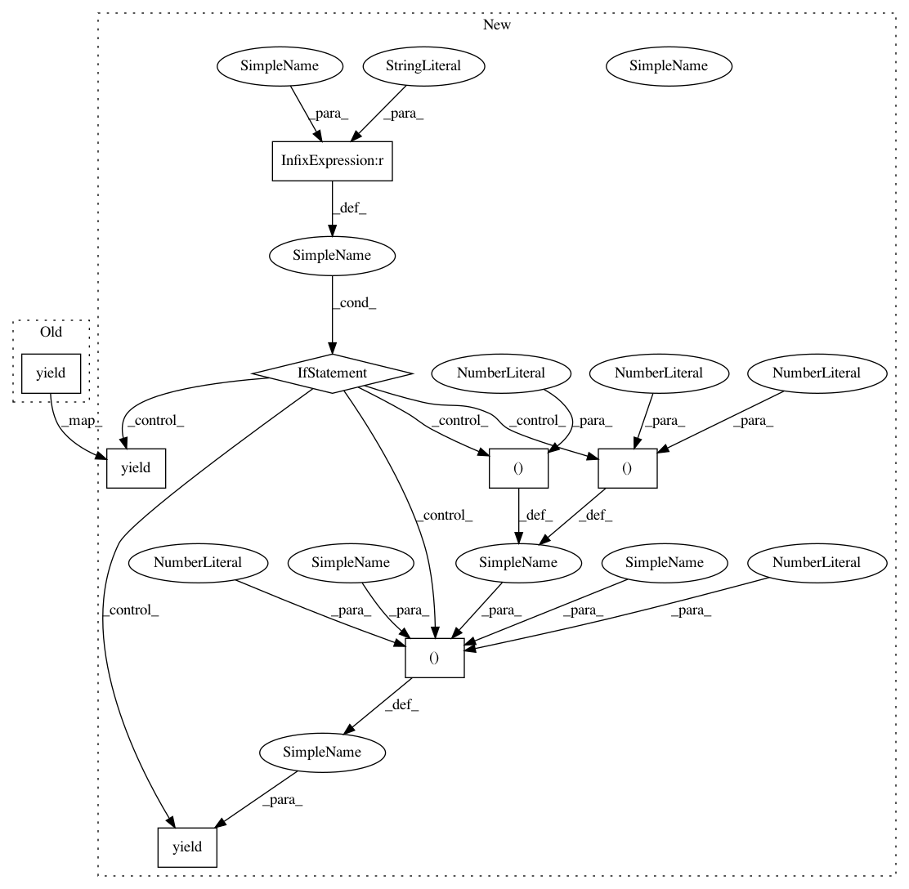

95802b04996c3704128496209973be56cea86985,skopt/tests/test_tree_opt.py,,test_tree_based_minimize,#,86
Before Change
[("-2", "-1", "0", "1", "2")], 0.05, 10)
yield (check_minimize, minimizer, branin, 0.39,
[(-5.0, 10.0), (0.0, 15.0)], 0.1, 100)
yield (check_minimize, minimizer, hart6, -3.32,
np.tile((0.0, 1.0), (6, 1)), 1.0, 25)
After Change
yield (check_minimize, minimizer, bench4, 0.0,
[("-2", "-1", "0", "1", "2")], 0.05, 10)
if name == "dt":
yield (check_minimize, minimizer, branin, 0.39,
[(-5.0, 10.0), (0.0, 15.0)], 0.1, 200)
yield (check_minimize, minimizer, hart6, -3.32,
np.tile((0.0, 1.0), (6, 1)), 1.0, 100)
else:
yield (check_minimize, minimizer, branin, 0.39,
[(-5.0, 10.0), (0.0, 15.0)], 0.1, 125)
yield (check_minimize, minimizer, hart6, -3.32,
np.tile((0.0, 1.0), (6, 1)), 1.0, 30)
In pattern: SUPERPATTERN
Frequency: 3
Non-data size: 8
Instances
Project Name: scikit-optimize/scikit-optimize
Commit Name: 95802b04996c3704128496209973be56cea86985
Time: 2016-08-01
Author: g.louppe@gmail.com
File Name: skopt/tests/test_tree_opt.py
Class Name:
Method Name: test_tree_based_minimize
Project Name: scikit-optimize/scikit-optimize
Commit Name: ec35eaac297d1f59eba15a8eb4abba0dc9222fbe
Time: 2016-08-17
Author: manojkumarsivaraj334@gmail.com
File Name: skopt/tests/test_forest_opt.py
Class Name:
Method Name: test_tree_based_minimize